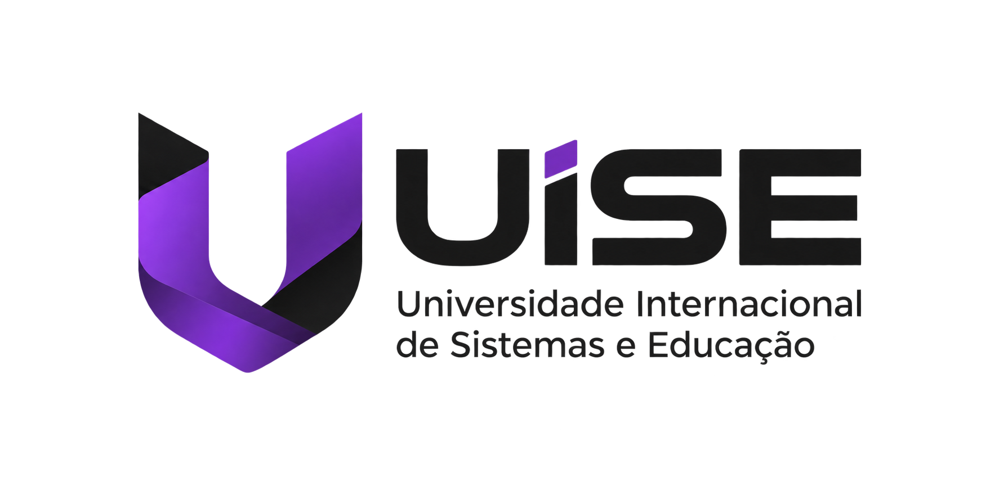
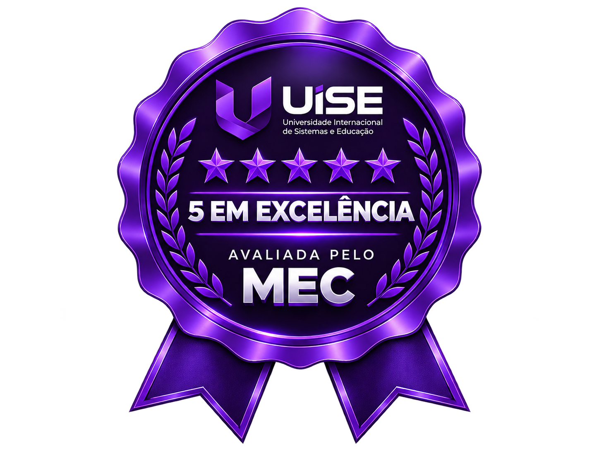

◌
Padrão Internacional
Alinhamento com diretrizes de currículos de tecnologia do MIT e ACM, garantindo que o seu diploma tenha relevância e peso em múltiplos mercados.

UiSEA Universidade Internacional de Sistemas e Educação une o melhor da pedagogia moderna com o avanço tecnológico científico para estruturar uma base acadêmica confiável e premium.
Nossa trajetória

A UISE nasceu com o compromisso inabalável de quebrar as barreiras entre o conhecimento acadêmico teórico e a demanda de infraestruturas tecnológicas modernas. Desde a nossa fundação em Belo Horizonte/MG, estruturamos uma rede educacional que atua de forma rigorosa, ética e centrada na solução de problemas complexos.
Através de metodologias ativas, nossos alunos não apenas absorvem conteúdo, mas atuam como engenheiros e arquitetos de soluções práticas em laboratórios avançados. É esse compromisso científico que nos garantiu a nota máxima no conceito oficial do MEC.
Desenvolver habilidades analíticas avançadas em sistemas através do ensino integrado e focado no progresso tecnológico e social do país.
Ser referência internacional em educação híbrida de sistemas dinâmicos até 2030, integrando tecnologia, engenharias e o mercado de trabalho digital.
Rigor acadêmico, ética profissional inegociável, transparência administrativa, inclusão educacional corporativa e inovação tecnológica orientada à prática.
Diferenciais UISE
Alinhamento com diretrizes de currículos de tecnologia do MIT e ACM, garantindo que o seu diploma tenha relevância e peso em múltiplos mercados.
Nossos professores são doutores com longa trajetória acadêmica e executivos seniores ativos nas maiores empresas brasileiras de software e dados.
Esqueça aulas teóricas obsoletas de memorização. Aqui você resolve desafios industriais reais e cria protótipos de sistemas de escala global.
Laboratórios, polos e ambientes digitais estruturados para práticas profissionais e a formação de líderes do futuro.
Governança e responsabilidade
A governança corporativa e acadêmica da UISE é pautada pela auditoria rigorosa de processos pedagógicos e avaliação contínua de infraestrutura. Nosso Conselho Superior Acadêmico, composto por representantes do Polo Belo Horizonte, São Paulo e Rio de Janeiro, garante que os investimentos em tecnologia e pesquisa sigam os mais rigorosos padrões nacionais de qualidade.
Isso garante que cada estudante tenha o mesmo grau de suporte digital e presencial independente do programa escolhido, reforçando o selo de confiança e compromisso histórico da nossa marca.